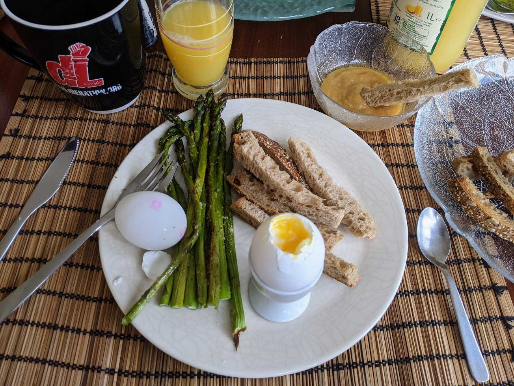

..@..♦.D.

|
Présentation 
|
Blog
|
Recettes
|

Ici avec des asperges rôties
Pour trois personnes :
Remarque : à la place, ou en plus, des mouillettes de pain, on peut aussi utiliser des asperges rôties (ou grillées, ou même cuites à l'eau).